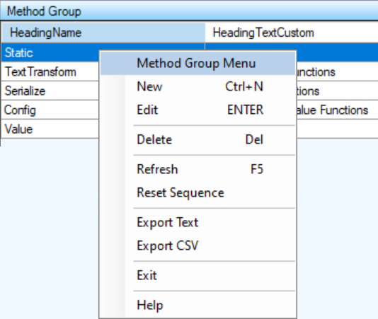

The Method Group Items can be added, edited and deleted from this list.

The Context Menu can be displayed by clicking the right mouse button on the desired list item. The list item is selected and the menu items apply to the selected item or list.
If you are using a Tablet or a laptop in Tablet Mode, touch the desired list item and leave your finger on the item for a short while until a box is displayed. This shows that the touch is considered a right mouse click. Remove your finger and the context menu will be displayed.
The 'New' menu item displays the Method Group Detail dialog to allow for the creation of a new list item.
The 'Edit' menu item displays the Method Group Detail dialog to allow for editing the selected list item.
The 'Delete' menu item deletes the selected list item.
The 'Refresh' menu item reloads the list items from the database.
The 'Export Text' menu item creates a tab delimited text file with the file name 'ExportFiles\MethodGroup.txt'. It attempts to display the data with the application that is associated with the '.txt' extension.
The 'Export CSV' menu item creates a comma delimited text file with the file name 'ExportFiles\MethodGroup.csv'. It attempts to display the data with the application that is associated with the '.csv' extension.
The 'Reset Sequence' menu item resequences the items in the lists starting with the number '1'.
The 'Exit' menu item closes the window and exits the application.
Displays the context sensitive Help Page.